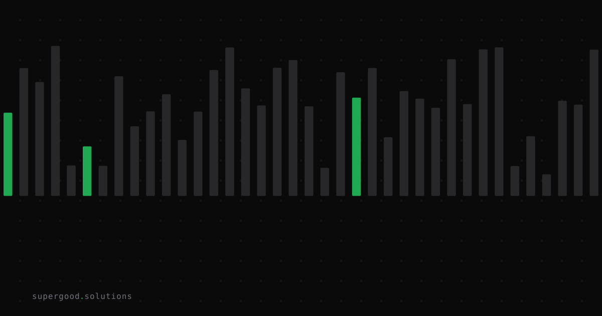

Your Ops Team Just Shipped an AI Tool. Now What?
TL;DR: Low-code AI builders have handed finance, HR, and ops teams the keys to internal tooling — and they're shipping faster than your governance framework was built to catch. The blind spot isn't the tool itself. It's the gap between the day it launches and the day IT finds out it exists.
Key Insight
The conventional wisdom is that "shadow IT" died when cloud adoption became policy. The new version is worse: shadow AI. The difference is that a rogue SaaS subscription sits idle when someone stops paying for it. A low-code AI tool that connects to your CRM, pulls from your HR system, and emails summaries every Monday doesn't sit idle. It keeps running, keeps pulling data, and keeps making decisions — invisibly — long after the person who built it moved on to something else.
A 2026 CSA and Token Security survey put a number on the gap: 82% of organizations discovered at least one AI agent or workflow that security or IT did not previously know about. In that same population, 65% had a security incident in the past year involving AI agents — and every single organization that had an incident reported real business impact, most commonly data exposure.
This is a governance sequencing problem, not a technology failure. The velocity gain is real. The catch-up is expensive.
Why Teams Miss This
The mistake is treating low-code AI deployment the same way you'd treat buying a software subscription. Someone in finance needs a tool that summarizes invoice exceptions and routes approvals. They build it in an afternoon using a low-code AI platform. It works. They show it to their manager. The manager loves it. It goes into weekly use.
Nobody files a ticket with IT. Nobody talks to legal about what data the platform retains. Nobody maps which system credentials got embedded in the workflow config.
IT's discovery process (periodic audits, network monitoring, expense report reviews) was built for a world where standing up infrastructure took weeks and required budget approval. Low-code AI tooling broke that assumption. The audit cadence doesn't match the deployment cadence anymore.
There's also a visibility trap. Panorama Consulting's research on low-code governance identifies a common pattern: organizations conflate operational visibility (knowing what's running day-to-day) with assurance-grade oversight (confidence that all agents are scoped, inventoried, and subject to control). The CSA report makes the same distinction and is blunt about it: "mostly visible is not good enough" when agents can access systems and trigger actions autonomously.
The person who built the tool isn't hiding it. They're proud of it. But pride and governance aren't the same thing.
How to Actually Do It
1. Treat low-code AI tools as process changes, not software purchases.
If a business team's new AI workflow touches customer data, employee data, or financial records, route it through the same lightweight review you'd apply to a process change. Not a full IT procurement cycle. That's overkill and kills velocity. A 30-minute async review with a checklist:
- What systems does this tool authenticate to?
- What data does it read, write, or transmit outside those systems?
- Who owns it if the builder leaves?
- What's the kill switch?
Four questions, documented somewhere findable. That's your audit trail.
2. Establish a low-code AI registry before you have an incident.
This doesn't need to be a CMDB entry. It can be a shared doc, a Notion page, a row in a spreadsheet. The goal is a discoverable list of "here's what we've built and what it touches." Make it easy to add to — friction is the enemy. If submitting a new tool takes 20 minutes of forms, people won't do it. A Slack message to a channel with a template is enough to start.
3. Build the ownership model into the workflow itself.
Low-code AI platforms like Retool, n8n, and Zapier support workspace-level admin views. Use them. Require that every workflow has an owner field set to a current employee's email. Run a monthly query for orphaned workflows — ones owned by people who've left the company. Deactivate them. This costs one engineer about two hours a month and eliminates one of the biggest data-exposure vectors.
4. Separate credential scope from tool scope.
The single most common expensive mistake happens when a finance analyst builds a workflow and authenticates it using their personal API key or a service account with admin-level permissions, because that's the key they had. The workflow only needs read access to two tables. It now has write access to the entire data warehouse.
Low-code AI tools almost never prompt you to scope down. Add that to your checklist: what's the minimum permission set this workflow needs? Create a scoped credential. Connect that one.
What We've Learned
The ops team that shipped the tool without IT knowing isn't the problem. They're doing exactly what you'd want them to do — finding friction and removing it. The problem is the governance infrastructure was built for a deployment cadence that no longer exists.
The fix isn't to slow down the business teams. It's to make the lightweight governance steps as fast as the build steps. If your review process is slower than the tool deployment, you've already lost. Build the checklist. Stand up the registry. Run the orphan query. Do it before the audit finds the workflow that's been emailing customer PII to a third-party summarization API for eight months.
Sources
- The Shadow AI Agent Problem in Enterprise Environments (CSA, April 2026)
- Autonomous but Not Controlled: AI Agent Incidents Now Common in Enterprises (CSA / Token Security survey)
- Low-Code Platforms and the Collapse of Process Governance (Panorama Consulting)
- From Shadow IT to Shadow AI (ISACA, 2025)
- Shadow AI: The Hidden Agents Beyond Traditional Governance (CIO.com)
Have a specific workflow in mind?
Bring it to a Quick Scan — a live working session where we'll tell you honestly whether it should be an agent, a workflow, or left alone, before you spend a dollar building it. You get 3 prioritized recommendations on the call, a one-page summary after, and the $500 credited toward any engagement within 30 days.
Get new posts + practical agent-ops notes
One email when something new goes up. No nurture sequence, no spam — unsubscribe whenever you want.